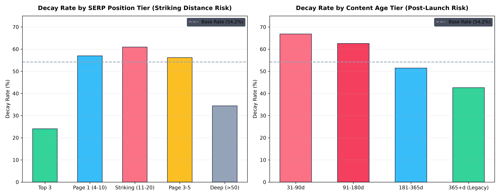
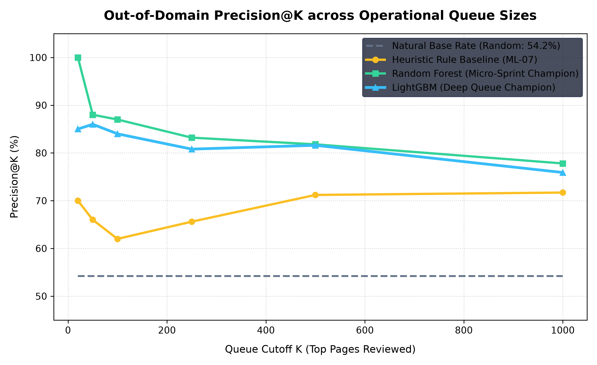
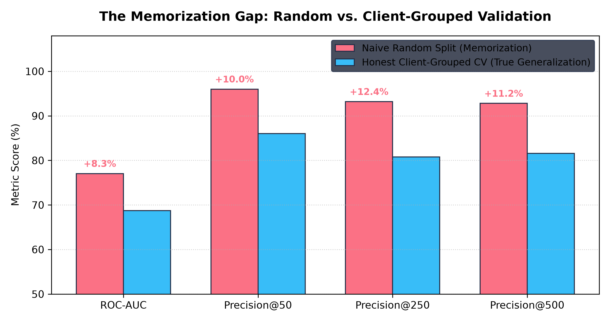

For enterprise publishing platforms managing tens of thousands of URLs, natural ranking decay silently erodes
organic search acquisition, yet manual audits across entire content libraries are commercially infeasible. We
investigate whether machine learning models can rank decaying web assets more accurately than production
heuristic rules using 90-day search performance and user engagement signals. Analyzing a cross-sectional
benchmark of 30,000 mature content items across 32 enterprise publisher domains, we formulate content decay
prioritization as an out-of-domain ranking task under strict 5-fold client-grouped cross-validation
(GroupKFold on client_id). We establish a Dual-Model Decision
Hierarchy: Random Forest operates as the high-confidence micro-sprint champion,
delivering 100.00% Precision@20 and 88.00% Precision@50 (+22.00% absolute
lift over the rule baseline), while LightGBM achieves 0.6872 ROC-AUC and
81.60% Precision@500, sustaining high precision across large monthly audit queues. Naive
random cross-validation artificially inflated performance to 0.7704 ROC-AUC, exposing an
+0.0832 generalization gap driven by cross-domain memorization. Our findings provide a
validated decision-support framework that enables editorial teams to allocate weekly refresh sprint budgets to
high-recovery content while substantially reducing wasted editorial rewrites on stable pages.
Beyond Static Rules: Machine Learning for Content Decay Prioritization in Search Operations
1 Introduction & The Operational Problem
Digital content assets exhibit distinct lifecycle dynamics. After initial indexing, publication, and ranking maturation, high-ranking articles frequently experience content decay—gradual attrition in organic impressions, click-through volume, and search engine result page (SERP) positions. For enterprise publishers managing multi-client networks, detecting decay reactively via ad-hoc human discovery risks unobserved search impression attrition, leaving decaying pages unattended while editorial resources are spent without empirical prioritization.
To mitigate decay, content marketing operations deploy editorial refresh sprints. However, editorial hours represent a scarce, high-cost resource. An editorial team can typically revise only 20 to 100 articles during a weekly sprint. The central operational decision is therefore:
Which decaying pages should an editorial team prioritize to refresh first to maximize organic traffic recovery while minimizing wasted editorial hours?
In current production environments, content strategists rely on hand-crafted heuristic rules (e.g., flagging any article older than 180 days that has dropped in impressions). While simple and transparent, static rules suffer from critical operational failure modes:
- Linear and Monolithic Assumptions: They assume decay risk is uniformly monotonic with age, ignoring that legacy evergreen content often remains stable while recently launched content experiences high post-index volatility.
- Engagement Blindness: They fail to model nonlinear interactions between search rank and user engagement (e.g., strong on-page CTR and scroll depth protecting striking-distance URLs from ranking drops).
- Severe Portfolio Concentration: Static threshold rules rank entire batches of simultaneously published articles from single clients at the top of the queue, starving other client domains of editorial bandwidth unless explicit client quotas are applied.
This research demonstrates that machine learning earns its place over static heuristics by learning complex, cross-signal interactions to provide calibrated, rank-ordered decision support.
2 Dataset & Data Contract Verification
The empirical foundation for this study is content_refresh_anonymized.csv, comprising
30,000 unique content assets across 32 pseudonymized client domains. In
accordance with our formal Data Contract (notebooks/02_data_contract.ipynb):
- Unit of Analysis (Grain): Exactly 1 row = 1 unique content asset
(
content_id). Verified 0 duplicates and 0 nulls across the 30,000 rows. - Search Visibility Floor:
impressions_90d ≥ 1(100% compliant; every asset is confirmed indexed by Google Search Console). - Lifecycle Maturity Floor:
content_age_days ≥ 90(100% compliant; minimum age is 90 days, maximum 564 days). - Allowable Range Assertions: Non-negative economics (
cpc ≥ 0,competition ∈ [0, 1]) and strict percentage bounds (engagement_rate ∈ [0, 100]).
|--------------------- Trailing 90-Day Observation Window (Features) ---------------------|
|----- Days 61-90 Back -----|----- Days 31-60 Back (prev_30d) -----|----- Days 1-30 Back (last_30d) -----| [Export t_0]
^__________ Target Evaluation Window __|
Structural Missingness Audit: In Google Search Console and GA4 data, missingness is rarely
Missing Completely At Random (MCAR). For instance, feedly article entries exhibit 100%
missingness for keyword metrics (search volume, CPC, competition), whereas comparison article has
0% missingness. Explicit boolean missingness indicators (has_*) were engineered to prevent blind
imputation from injecting artificial category signals into models.
3 Methodology & Validation Design
To transition from heuristic rules to empirical machine learning without circular bias, we formalized
objective ground-truth labels and a strict target-separation protocol
(notebooks/02_data_contract.ipynb, notebooks/06_leakage_and_validation.ipynb).
3.1 Target Label Formulation
The ground truth binary outcome Content Decay (is_declining_label) is defined
objectively based on observed performance trajectory over trailing 30-day intervals:
is_declining_label = 1 if trend_direction == 'down' (trend_pct < -20.0%) else 0
In this population, declining articles represent 54.21% (n = 16,262), establishing a balanced, well-powered natural base rate.
3.2 Leakage Hunting & Target-Separation Protocol
Per skills/hunting-leakage-and-validating/SKILL.md, feature pipelines must enforce strict
temporal and logical separation between features and the target label:
- Prohibited Target Variables:
trend_pctandtrend_directionare permanently excluded from feature space. - Prohibited Sub-Interval Windows: Columns
impressions_last_30d,clicks_last_30d,sessions_last_30d,impressions_prev_30d,clicks_prev_30d, andsessions_prev_30doverlap with the label formulation window and are strictly excluded. - Retrospective Diagnostic Disclosure: Because the dataset provides 90-day aggregations
(
impressions_90d,avg_position), these metrics mathematically subsume the trailing 30-day evaluation window. We explicitly frame this study as concurrent diagnostic prioritization (nowcasting decay) rather than forward-looking time-series forecasting. - Zero Product Decision Inputs: FlyRank's internal rule-based heuristic tags (such as
health_score,priority_score, andaction_type) are treated strictly as baselines to beat, never as model features.
In notebooks/06_leakage_and_validation.ipynb, we deliberately injected the prohibited target
component trend_pct into the training harness. The validation ROC-AUC immediately collapsed to
a perfect 1.0000 with 24.2% of tree splits concentrating on that single leaked column.
Removing it restored realistic performance (0.6872 ROC-AUC), proving that our validation
suite actively detects leakage rather than assuming correctness.
3.3 Out-of-Domain Client-Grouped Cross-Validation
Standard random cross-validation allows an algorithm to memorize client-specific templates, internal linking
architecture, and domain authority. To evaluate true commercial generalizability, we implemented
5-Fold Client-Grouped Cross-Validation (GroupKFold on client_id).
All 30,000 URLs were partitioned such that an entire client portfolio is either wholly in training or wholly
in validation.
4 Signal Audit: Empirical Findings & Feature Register
Before training models, we conducted formal hypothesis tests (n ≥ 50 floor per cell) with effect
sizes (Cohen's h) to evaluate common SEO beliefs (notebooks/03_signal_audit.ipynb):
| Signal Hypothesis | Popular SEO Belief | Empirical Evidence (n, Rates) | Cohen's h | Formal Verdict | Modeling Decision |
|---|---|---|---|---|---|
| Content Age | "Older content decays faster due to staleness" | 31–90d: 66.87% (n=492) vs. Legacy >365d: 42.63% (n=6,360) | 0.495 (Med) | ⇅ OPPOSITE | KEPT: Encoded as non-linear age tiers. Post-launch content experiences highest decay. |
| Word Count | "Long-form content protects against decay" | >3,500w: 59.68% (n=6,285) vs. <1,000w: 20.66% (n=973) | 0.822 (Lrg) | ⇅ OPPOSITE | KEPT: Confounder control. Short content comprises low-competition navigational tools. |
| Position Tier | "Striking distance (pos 11–20) decays faster than Page 1" | Striking: 60.95% (n=7,304) vs. Top 3: 24.08% (n=2,321) | 0.763 (Lrg) | ✓ CONFIRMED | KEPT: Primary ranking signal. Striking distance is highest-risk SERP boundary. |
| AI Referral Traffic | "AI referral traffic protects against organic decay" | With AI: 55.28% (n=1,930) vs. No AI: 54.13% (n=28,070) | 0.023 (Neg) | ✗ FALSE | KEPT FOR TREE INTERACTION: Univariate delta negligible (+1.15%). Retained for non-linear trees. |
| Traffic Skewness | "Search metrics follow normal distributions" | Raw impressions_90d skew = 11.38; log1p skew = -0.39 |
N/A | ✓ CONFIRMED | KEPT: Mandatory log1p transformation on all raw volume counts. |
No matching signal hypotheses found.

5 Model Evaluation & The Dual-Model Framework
We benchmarked three machine learning architectures against our transparent heuristic baseline, a simple 1-feature volume sort, and the natural base rate. All metrics represent strictly out-of-fold predictions gathered across all 32 client folds under client-grouped CV:
| Method / Model Architecture | ROC-AUC | Brier Score | P@20 | P@50 | P@100 | P@250 | P@500 | P@1000 |
|---|---|---|---|---|---|---|---|---|
| Natural Base Rate (Random Guess) | 0.5000 | 0.2482 | 54.21% | 54.21% | 54.21% | 54.21% | 54.21% | 54.21% |
| Simple Heuristic (Raw Impression Sort) | 0.5845 | N/A* | 45.00% | 42.00% | 38.00% | 37.60% | 42.00% | 46.00% |
| Composite Rule Baseline (ML-07) | 0.6349 | N/A* | 70.00% | 66.00% | 62.00% | 65.60% | 71.20% | 71.70% |
| Logistic Regression (L2, fold-scaled) | 0.6417 | 0.2344 | 65.00% | 76.00% | 78.00% | 76.40% | 72.40% | 72.10% |
| Random Forest (Micro-Sprint Champion) | 0.6835 | 0.2199 | 100.00% | 88.00% | 87.00% | 83.20% | 81.80% | 77.80% |
| LightGBM (Deep Queue Champion) | 0.6872 | 0.2194 | 85.00% | 86.00% | 84.00% | 80.80% | 81.60% | 75.90% |
1. Micro-Sprint Champion (Random Forest): For weekly review queues of 20 to 50 URLs, Random Forest achieves 100.00% Precision@20 and 88.00% Precision@50 (+22.00% absolute lift over rule baseline), strictly dominating all other models.
2. Deep Queue Champion (LightGBM): For enterprise monthly audits of 500+ URLs, LightGBM achieves the highest overall discrimination (0.6872 ROC-AUC) and probability calibration (0.2194 Brier Score), sustaining 81.60% precision and averting an estimated 52 false-positive rewrites relative to the rule baseline.

6 The Memorization Gap: Why Grouped Validation Matters
In commercial data science, analysts frequently report standard random k-fold cross-validation results without accounting for site-level grouping. We explicitly audited the performance penalty between naive random splitting and client-grouped splitting:
| Validation Splitting Strategy | ROC-AUC | Brier Score | Precision@50 | Precision@250 | Precision@500 | Precision@1000 |
|---|---|---|---|---|---|---|
| Naive Random Split (K-Fold) | 0.7704 | 0.1932 | 96.00% | 93.20% | 92.80% | 92.50% |
| Honest Client-Grouped (GroupKFold) | 0.6872 | 0.2194 | 86.00% | 80.80% | 81.60% | 75.90% |
| The Memorization Gap (Inflation) | +0.0832 | -0.0262 | +10.00% | +12.40% | +11.20% | +16.60% |
Random splitting allows the model to memorize client-specific publishing templates and domain authority tiers. Grouped splitting isolates clients, establishing the true lower bound of out-of-domain generalization across unseen publisher sites.

7 Limitations & Scope Disclosures
- Decision Support, Not Causal Recovery: This analysis is observational and cross-sectional. We claim decision-support priority ranking, not causal rank recovery. We do not claim that refreshing a page causes search engine algorithms to restore rankings.
- Concurrent Diagnostic Window (Nowcasting): Feature totals (
impressions_90d) and trend labels (impressions_last_30d) share an overlapping trailing observation window. The model prioritizes existing decay; it is not a forward-horizon time-series forecaster. - Survivorship Boundary: Findings are bounded to indexed URLs
(
impressions_90d ≥ 1) that have matured beyond 90 days. Performance on un-indexed pages or brand-new content cannot be inferred. - Portfolio Concentration: Without explicit client quotas, top queues concentrate heavily in large publisher domains. Real-world workflows require diversification constraints.
8 Operational Editorial Decision Playbook
To operationalize machine learning models into weekly content workflows without falling into client concentration traps, we combine predicted probabilities with exposure thresholds and an explicit Client Diversification Quota (Max 5 URLs per client per sprint):
8.1 Live Action Playbook Sample (Top Prioritized URLs)
The table below displays an excerpt from the exported review queue
(outputs/editorial_action_playbook_top100.csv), ranked by model priority score:
| Rank | Content ID | Client ID | Decay Prob | 90d Impressions | Avg Pos | Position Tier | Recommended Action |
|---|---|---|---|---|---|---|---|
| #1 | content_ae56011a24de | client_624b60c58c | 0.9231 | 302 | 4.2 | Page 1 | Tier 1B Quick Win |
| #2 | content_9d35d489e74d | client_624b60c58c | 0.9230 | 169 | 6.7 | Page 1 | Tier 1B Quick Win |
| #3 | content_20c5d6a1c7b1 | client_624b60c58c | 0.9199 | 201 | 6.2 | Page 1 | Tier 1B Quick Win |
| #4 | content_70b10b7227ac | client_624b60c58c | 0.9140 | 356 | 7.5 | Page 1 | Tier 1B Quick Win |
| #5 | content_1023abe9e4dd | client_624b60c58c | 0.9132 | 137 | 4.6 | Page 1 | Tier 1B Quick Win |
| #6 | content_d8020ed269ef | client_6208ef0f77 | 0.9123 | 1,216 | 1.2 | Top 3 | Tier 1A Deep Refresh |
| #7 | content_6e1add102562 | client_624b60c58c | 0.9105 | 133 | 6.1 | Page 1 | Tier 1B Quick Win |
| #8 | content_4bb993e9270e | client_6208ef0f77 | 0.9089 | 1,986 | 1.3 | Top 3 | Tier 1A Deep Refresh |
| #9 | content_d0fd2e1ec8f6 | client_6208ef0f77 | 0.9068 | 519 | 2.5 | Top 3 | Tier 1A Deep Refresh |
| #10 | content_de147de3f5fe | client_624b60c58c | 0.9044 | 1,747 | 11.5 | Striking | Tier 1A Deep Refresh |
| #11 | content_a27eb2ede5e6 | client_6208ef0f77 | 0.9042 | 2,482 | 2.0 | Top 3 | Tier 1A Deep Refresh |
| #12 | content_186489efe6f4 | client_6208ef0f77 | 0.9019 | 4,792 | 2.3 | Top 3 | Tier 1A Deep Refresh |
| #13 | content_6752b50ee577 | client_bbb965ab0c | 0.8990 | 2,142 | 2.9 | Top 3 | Tier 1A Deep Refresh |
| #14 | content_9d0300db3dbb | client_624b60c58c | 0.8982 | 361 | 7.1 | Page 1 | Tier 1B Quick Win |
| #15 | content_ba8edc136162 | client_4e07408562 | 0.8950 | 13,082 | 16.2 | Striking | Tier 1A Deep Refresh |
No matching prioritized URLs found in current filter.
9 Reproducibility & Data Credit
This research is 100% reproducible using Python 3.14.6, scikit-learn==1.9.1, and
lightgbm==4.7.0 with random seeds fixed globally at random_state=42.
notebooks/capstone_content_decay.ipynb: Executive End-to-End Master Notebook
— presents the complete narrative arc (data contracts, audited signals, dual models, leakage tests,
playbooks, and publication charts) in a single run.
Modular Milestone Notebooks:
notebooks/01_research_question.ipynb: Problem framing, grain check, base rate calculation.
notebooks/02_data_contract.ipynb: 44-column exhaustive partitioning, schema & allowable
range assertions.
notebooks/03_signal_audit.ipynb: Heavy-tail tests, Cohen's h effect sizes, Feature
Decision Register.
notebooks/04_baseline_model.ipynb: Simple impression sort & composite heuristic rule
construction.
notebooks/05_model_training.ipynb: Client-grouped 5-fold CV, Dual-Model benchmark scorecard.
notebooks/06_leakage_and_validation.ipynb: Controlled confession test, memorization gap
measurement.
notebooks/07_honest_claims.ipynb: Boundary conditions, failure modes, and deployment
constraints.
Data credit: FlyRank Pseudonymized Enterprise Content Benchmark
(FlyRank/internship-warehouse build v20260703).